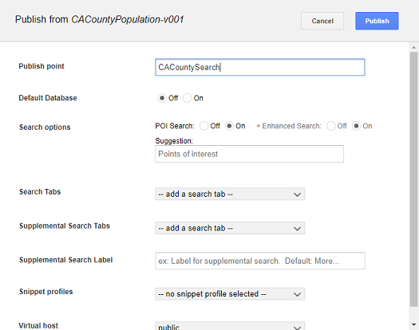
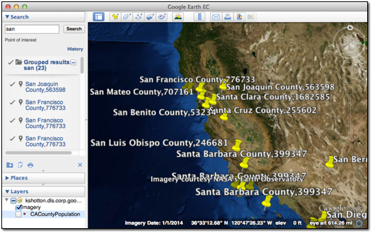

Specifying Search Fields for Individual Layers¶
You can specify one or more fields by configuring layer properties in your source data on which users of Google Earth EC can search. This lesson guides you through the process of specifying one field on one layer as searchable, using the vector project you created in Configuring Display Rules for Polygon Data. If you have not yet completed that lesson, complete at least the first two sections, Define and Build a Vector Resource Using Polygon Data and Define, Configure, and Build a Vector Project, before continuing with this lesson.
- Specify Search Fields in Layer Properties
- Build and Push Your Database
- Specify Your Point of Interest Search and Publish Your Database in Google Earth Enterprise Server
- View your Database with the Search Field
Specify Search Fields in Layer Properties
To specify the search fields in your data:
Select Asset Manager from the Tools menu.
The Asset Manager appears.
Navigate to the
/ASSET_ROOT/Projects/Vectorfolder.Double-click CACountyPopulation.
The CACountyPopulation resource appears in the Vector Project Editor dialog.
Right-click CACountyPopulation, and select Layer Properties from the context menu.
The Layer Properties dialog appears.
Click the Search tab.

When you specify one or more search fields on this tab, a search panel appears in Google Earth EC that allows users to search for data in the selected field(s).
Click
 . The Add Search Field dialog appears.
. The Add Search Field dialog appears.
Select COUNTY from the drop-down list next to Column Name, select Search and Display from the drop-down list next to Use, and then click OK.

These selections allow users to search on the COUNTY field and display the county name in the description label.
Click
. The Add Search Field dialog appears.Select POP2000 from the drop-down list next to Column Name, select Display Only from the drop-down list next to Use, and then click OK.

These selections result in the county population being displayed in the description label for each county that matches the user’s search criteria. The first field selected for display becomes the placemark name. The second field selected for display becomes the snippet. Any additional fields selected for display become the description.
Note
This search performs an exact match, which means that the Google Earth EC user must enter the value exactly as it appears in the database. It can also perform a wildcard search, so users can enter part of the text they want to match. For example, if a user enters “dakota” in a state search, the search results match “North Dakota” and “South Dakota”.
Your selections appear on the list of search fields on the Search panel in the order in which you added them. Use the Up or Down arrows to reorder the list.

The order in which the fields appear on this list dictates the order in which they appear in the description label in Google Earth EC.
Click OK.
Save the project.
Build and Push To Your Database
In the Asset Manager, navigate to the
/ASSET_ROOT/Databasesfolder.Right-click the CACountyPopulation database and select Build from the context menu.
The status of the database immediately changes to Queued and then to In Progress.
Double-click the Current Version or Current State column of the CACountyPopulation to view the progress of the build.
The Version Properties dialog displays the most recent version of that database. You can expand the version tree to view the status of the build in real time by clicking the + signs.
When Google Earth Enterprise Fusion finishes building the database, its Current State column in the Asset Manager changes to Succeeded, and its Current Version column changes to the date and time the most recent build was started.
Right-click the CACountyPopulation database and select Push from the context menu.
The Push Database dialog appears. Choose your server association from the Server Associations drop-down list. The most recent version of the selected database is the default selection on the Version drop-down list.
Click Push. Google Earth Enterprise Fusion pushes the database to Google Earth Enterprise Server, and displays a success message when it is done.
Note
If you get an error message, contact your Google Earth Enterprise Server administrator for help, or check the Google Earth Enterprise Administration Guide for more information.
Specify Your Point of Interest Search and Publish Your Database in Google Earth Enterprise Server
After you push your database to Google Earth Enterprise Server, you can publish it for viewing with Google Earth EC.
To publish a database:
Access the Google Earth Enterprise Server Admin console in a browser window by going to myserver.mydomainname.com/admin, replacing myserver and mydomainname with your server and domain.
Sign in with the default credentials or the username and password assigned to you:
- Default username: geapacheuser
- Default password: geeadmin
Note
If you do not know your username and password, contact your Google Earth Enterprise Server System Administrator.
Click Databases to display the list of databases pushed to the server.
CACountyPopulation-v001 is listed. The Description, Type, Date, and Size of the database are also noted.
Check the box next to CACountyPopulation-v001. The Publish button on the Databases page appears.
Click Publish. The Publish dialog appears.
Select the POI Search radio button labeled On. The + Enhanced Search option appears. Leave its radio button setting as On. Doing so will first search against the POI database, and if no results are found, the GeocodingFederated database is automatically searched.
Change the default Publish point from CACountyPopulation-v001 to CACountySearch.

To learn more about the options available in the Publish dialog, see
Click Publish. The Databases page updates to indicate the published status of your database.
View your Database with the Search Field
Now you can view the POISearch search field in Google Earth EC and use it to search on the county information parameters you specified in your database.
- Launch Google Earth EC, and log in to your server.
- Specify the Publish point by entering or selecting the URL or IP address of your server and database in the Server field. For this tutorial, the Publish point is myserver.mydomainname.com/CACountySearch, where myserver and mydomainname are specific to your server. An example URL would be http://myhostname/CACountySearch.
- Click the Sign In button.
Warning
If you have logged in to this server with Google Earth EC previously, log out, clear your cache, and log back in. See clearing your cache.
Google Earth EC displays your database with the search field you specified. When you enter a search string, such as “San”, all of the counties containing that string appear in the search results, and POI icons indicate the location of each of the search results on the map.
